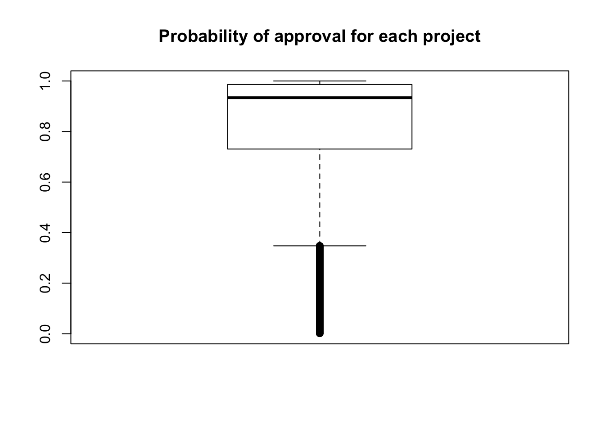

Last updated: 2018-04-18
Code version: e40964f
The goal of this script is to run XGBoost on a model.
# Libraries
library(dplyr)
Attaching package: 'dplyr'The following objects are masked from 'package:stats':
filter, lagThe following objects are masked from 'package:base':
intersect, setdiff, setequal, unionlibrary(stringr)
library(tidytext)Warning: package 'tidytext' was built under R version 3.4.4library(ggplot2)
library(tidyverse)── Attaching packages ────────────────────────────────────────────────────────────────────── tidyverse 1.2.1 ──✔ tibble 1.4.2 ✔ readr 1.1.1
✔ tidyr 0.7.2 ✔ purrr 0.2.4
✔ tibble 1.4.2 ✔ forcats 0.2.0── Conflicts ───────────────────────────────────────────────────────────────────────── tidyverse_conflicts() ──
✖ dplyr::filter() masks stats::filter()
✖ dplyr::lag() masks stats::lag()library("xgboost")
Attaching package: 'xgboost'The following object is masked from 'package:dplyr':
slice# Open the datasets
train <- read.csv("~/Dropbox/DonorsChoose/train.csv")
test <- read.csv("~/Dropbox/DonorsChoose/test.csv")
resources <- read.csv("~/Dropbox/DonorsChoose/resources.csv")Get total price and number of items
# Total price
resources[,1] <- as.character(resources[,1])
resources_total_price <- as.data.frame(cbind(resources$id, resources$quantity*resources$price), stringsAsFactors = FALSE)
resources_total_price[,2] <- as.numeric(resources_total_price[,2])
resources_total_price2 <- aggregate(resources_total_price[,2], by=list(Category=resources_total_price[,1]), FUN=sum)
# Total quantity
resources_quantity_total <- aggregate(resources$quantity, by=list(Category=resources$id), FUN=sum)
resources_together <- as.data.frame(cbind(resources_total_price2, resources_quantity_total[,2]), stringsAsFactors = FALSE)
colnames(resources_together) <- c("id", "total_amount", "total_items")
# Merge resources with training and test data
training_data <- merge(resources_together, train, by = c("id"))
testing_data <- merge(resources_together, test, by = c("id"))## set the seed to make your partition reproductible
set.seed(123)
## 75% of the sample size
smp_size <- floor(0.75 * nrow(training_data))
train_ind <- sample(seq_len(nrow(training_data)), size = smp_size)
train <- training_data[train_ind, ]
test2 <- training_data[-train_ind, ]#str(train)
#basic_features <- c(2,3,5,6,8,9,17)
#train_data <- train[,basic_features]
# XGBoost only works with numeric vectors
#train_data[,1] <- as.numeric(train_data[,1])
#train_data[,2] <- as.numeric(train_data[,2])
#train_data[,3] <- as.numeric(train_data[,3])
#train_data[,4] <- as.numeric(train_data[,4])
#train_data[,5] <- as.numeric(train_data[,5])
#train_data[,6] <- as.numeric(train_data[,6])
#train_data <- as.list(train_data)
#train_data <- as.matrix(train_data)
#train_labels <- as.matrix(train[,18])
#dtrain <- xgb.DMatrix(data = train_data[,1:7], label=train_labels)
#dtest <- xgb.DMatrix(data = test$data, label=test$label)
######## Update
#basic_features <- c(2,3,5,6,8,9,17)
#train_data <- train[,basic_features]
#train_data[,1] <- as.numeric(train_data[,1])
#train_data[,2] <- as.numeric(train_data[,2])
#train_data[,3] <- as.(train_data[,3])
#train_data[,4] <- as.numeric(train_data[,4])
#train_data <- as.list(train_data)
#train_data <- as.matrix(train_data)
#dtrain <- xgb.DMatrix(data = train_data, label=train_labels)
#dtest <- xgb.DMatrix(data = test$data, label=test$label)
#bst <- xgboost(data = dtrain, max.depth = 5, eta = 1, nthread = 2, nround = 3, objective = "binary:logistic", verbose = 1)
#importance_matrix <- xgb.importance(model = bst)
#print(importance_matrix)
# Adjust the test data
#basic_features <- c(2,3,5,6,8,9,17)
#test2_data <- test2[,basic_features]
# XGBoost only works with numeric vectors
#test2_data[,1] <- as.numeric(test2_data[,1])
#test2_data[,2] <- as.numeric(test2_data[,2])
#test2_data[,3] <- as.numeric(test2_data[,3])
#test2_data[,4] <- as.numeric(test2_data[,4])
#test2_data[,5] <- as.numeric(test2_data[,5])
#test2_data[,6] <- as.numeric(test2_data[,6])
#train_data <- as.list(train_data)
#test2_data <- as.matrix(test2_data)
#test2_labels <- as.matrix(test2_data[,18])
#dtrain <- xgb.DMatrix(data = train_data[,1:7], label=train_labels)
# Make prediction
#pred <- predict(bst, test_data[,1:5])
#err <- mean(as.numeric(pred > 0.5) != test_data[,6])
#print(paste("test-error=", err))
# Look at cross validation
#bst_model <- xgb.cv(data=dtrain, max_depth=50, eta=1, nthread = 2, nrounds=30, nfold = 5, watchlist=watchlist, eval_metric = "error", eval_metric = "logloss", objective = "binary:logistic", scale_pos_weight = negative_cases/positive_cases)
# Weighting by the number of positive versus negative cases
#negative_cases <- sum(train_data[,6] == 0)
#positive_cases <- sum(train_data[,6] == 1)
# Experiment with dtest
#dtest <- xgb.DMatrix(data = test_data[,1:5], label=test_data[,6])
#watchlist <- list(train=dtrain, test=dtest)
#bst <- xgb.train(data=dtrain, max_depth=70, eta=1, nthread = 2, nrounds=30, watchlist=watchlist, eval_metric = "error", eval_metric = "logloss", objective = "binary:logistic")
#pred <- predict(bst, test_data[,1:5])
#err <- mean(as.numeric(pred > 0.5) != test_data[,6])
#print(paste("test-error=", err))
#importance_matrix <- xgb.importance(model = bst)
#print(importance_matrix)
# Perform linear boosting and look at its performance
#bst <- xgb.train(data=dtrain, booster = "gblinear", max_depth=2, nthread = 2, nrounds=2, watchlist=watchlist, eval_metric = "error", eval_metric = "logloss", objective = "binary:logistic", scale_pos_weight = negative_cases/positive_cases)################################## Training data #############################
basic_features <- c(2,3,5,6,8,9,17)
train_data <- train[,basic_features]
# XGBoost only works with numeric vectors
train_data[,1] <- as.numeric(train_data[,1])
train_data[,2] <- as.numeric(train_data[,2])
train_data[,3] <- as.numeric(train_data[,3])
train_data[,4] <- as.numeric(train_data[,4])
train_data[,5] <- as.numeric(train_data[,5])
train_data[,6] <- as.numeric(train_data[,6])
#train_data <- as.list(train_data)
train_data <- as.matrix(train_data)
train_labels <- as.matrix(train[,18])
################################## Test data #############################
basic_features <- c(2,3,5,6,8,9,17)
test2_data <- test2[,basic_features]
# XGBoost only works with numeric vectors
test2_data[,1] <- as.numeric(test2_data[,1])
test2_data[,2] <- as.numeric(test2_data[,2])
test2_data[,3] <- as.numeric(test2_data[,3])
test2_data[,4] <- as.numeric(test2_data[,4])
test2_data[,5] <- as.numeric(test2_data[,5])
test2_data[,6] <- as.numeric(test2_data[,6])
#train_data <- as.list(train_data)
test2_data <- as.matrix(test2_data)
test2_labels <- as.matrix(test2[,18])
############ Run dtrain and dtest, weight by the unequal number of positive and negative cases ##############
dtrain <- xgb.DMatrix(data = train_data[,1:7], label=train_labels)
dtest <- xgb.DMatrix(data = test2_data[,1:7], label=test2_labels)
watchlist <- list(train=dtrain, test=dtest)
negative_cases <- sum(train_labels == 0)
positive_cases <- sum(train_labels == 1)
bst <- xgb.train(data=dtrain, max_depth=70, eta=1, nthread = 2, nrounds=24, watchlist=watchlist, scale_pos_weight = negative_cases/positive_cases, eval_metric = "error", eval_metric = "logloss", objective = "binary:logistic")[1] train-error:0.262434 train-logloss:0.553779 test-error:0.368651 test-logloss:0.647316
[2] train-error:0.207550 train-logloss:0.462004 test-error:0.344025 test-logloss:0.625807
[3] train-error:0.160289 train-logloss:0.392399 test-error:0.320672 test-logloss:0.611538
[4] train-error:0.125608 train-logloss:0.337727 test-error:0.303735 test-logloss:0.603689
[5] train-error:0.099436 train-logloss:0.294450 test-error:0.290620 test-logloss:0.598239
[6] train-error:0.080866 train-logloss:0.259372 test-error:0.280294 test-logloss:0.596009
[7] train-error:0.066337 train-logloss:0.231952 test-error:0.273660 test-logloss:0.595326
[8] train-error:0.055412 train-logloss:0.208817 test-error:0.268431 test-logloss:0.596286
[9] train-error:0.046741 train-logloss:0.189413 test-error:0.261709 test-logloss:0.597448
[10] train-error:0.039331 train-logloss:0.172379 test-error:0.258128 test-logloss:0.598636
[11] train-error:0.034044 train-logloss:0.158922 test-error:0.255316 test-logloss:0.601242
[12] train-error:0.029840 train-logloss:0.149130 test-error:0.251933 test-logloss:0.602368
[13] train-error:0.026794 train-logloss:0.140640 test-error:0.249912 test-logloss:0.603667
[14] train-error:0.023111 train-logloss:0.131309 test-error:0.247122 test-logloss:0.607092
[15] train-error:0.020006 train-logloss:0.122591 test-error:0.244772 test-logloss:0.610044
[16] train-error:0.017340 train-logloss:0.114915 test-error:0.244047 test-logloss:0.613528
[17] train-error:0.014953 train-logloss:0.108641 test-error:0.242926 test-logloss:0.615704
[18] train-error:0.013972 train-logloss:0.105118 test-error:0.241037 test-logloss:0.616760
[19] train-error:0.012471 train-logloss:0.100706 test-error:0.239301 test-logloss:0.620066
[20] train-error:0.011277 train-logloss:0.096383 test-error:0.238642 test-logloss:0.622680
[21] train-error:0.009805 train-logloss:0.091575 test-error:0.237939 test-logloss:0.625872
[22] train-error:0.008721 train-logloss:0.087476 test-error:0.236533 test-logloss:0.628719
[23] train-error:0.007813 train-logloss:0.084889 test-error:0.236314 test-logloss:0.631182
[24] train-error:0.007001 train-logloss:0.081420 test-error:0.234798 test-logloss:0.633702 pred <- predict(bst, test2_data[,1:7])#test <- read.csv("~/Dropbox/DonorsChoose/test.csv")
#test[,1] <- as.character(test[,1])
#basic_features <- c(3,4, 6,7,15)
test_data <- testing_data[,basic_features]
test_data[,1] <- as.numeric(test_data[,1])
test_data[,2] <- as.numeric(test_data[,2])
test_data[,3] <- as.numeric(test_data[,3])
test_data[,4] <- as.numeric(test_data[,4])
test_data[,5] <- as.numeric(test_data[,5])
test_data[,6] <- as.numeric(test_data[,6])
#train_data <- as.list(train_data)
test_data <- as.matrix(test_data)
pred <- predict(bst, test_data)
make_csv <- as.data.frame(cbind(testing_data$id, pred), stringsAsFactors = FALSE)
colnames(make_csv) <- cbind("id", "project_is_approved")
boxplot(as.numeric(make_csv$project_is_approved), ylim = c(0,1), main = "Probability of approval for each project")
order_id <- make_csv[order(match(make_csv$id, test$id)), ]
write.csv(order_id, "../data/sample_submission.csv", row.names = FALSE, sep= ",")Warning in write.csv(order_id, "../data/sample_submission.csv", row.names =
FALSE, : attempt to set 'sep' ignoredThis entry scored 0.57367, which was slightly higher than the “Getting Started Benchmark” of 0.56522.
Incorporate information about the word count for the title and each essay to the model. Also, incorporate the information about the sentiment scores of the title and each essay to the model.
sessionInfo()R version 3.4.3 (2017-11-30)
Platform: x86_64-apple-darwin15.6.0 (64-bit)
Running under: OS X El Capitan 10.11.6
Matrix products: default
BLAS: /Library/Frameworks/R.framework/Versions/3.4/Resources/lib/libRblas.0.dylib
LAPACK: /Library/Frameworks/R.framework/Versions/3.4/Resources/lib/libRlapack.dylib
locale:
[1] en_US.UTF-8/en_US.UTF-8/en_US.UTF-8/C/en_US.UTF-8/en_US.UTF-8
attached base packages:
[1] stats graphics grDevices utils datasets methods base
other attached packages:
[1] xgboost_0.6.4.1 forcats_0.2.0 purrr_0.2.4 readr_1.1.1
[5] tidyr_0.7.2 tibble_1.4.2 tidyverse_1.2.1 ggplot2_2.2.1
[9] tidytext_0.1.8 stringr_1.3.0 dplyr_0.7.4
loaded via a namespace (and not attached):
[1] reshape2_1.4.3 haven_1.1.1 lattice_0.20-35
[4] colorspace_1.3-2 htmltools_0.3.6 SnowballC_0.5.1
[7] yaml_2.1.18 rlang_0.1.6 pillar_1.1.0
[10] foreign_0.8-69 glue_1.2.0 modelr_0.1.1
[13] readxl_1.0.0 bindrcpp_0.2 bindr_0.1
[16] plyr_1.8.4 munsell_0.4.3 gtable_0.2.0
[19] cellranger_1.1.0 rvest_0.3.2 psych_1.7.8
[22] evaluate_0.10.1 knitr_1.20 parallel_3.4.3
[25] broom_0.4.3 tokenizers_0.2.0 Rcpp_0.12.15
[28] backports_1.1.2 scales_0.5.0 jsonlite_1.5
[31] mnormt_1.5-5 hms_0.4.0 digest_0.6.15
[34] stringi_1.1.7 grid_3.4.3 rprojroot_1.3-2
[37] cli_1.0.0 tools_3.4.3 magrittr_1.5
[40] lazyeval_0.2.1 janeaustenr_0.1.5 crayon_1.3.4
[43] pkgconfig_2.0.1 Matrix_1.2-13 data.table_1.10.4-3
[46] xml2_1.1.1 lubridate_1.7.1 assertthat_0.2.0
[49] rmarkdown_1.9 httr_1.3.1 rstudioapi_0.7
[52] R6_2.2.2 nlme_3.1-131 git2r_0.21.0
[55] compiler_3.4.3 This R Markdown site was created with workflowr